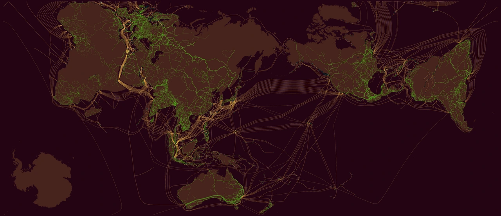
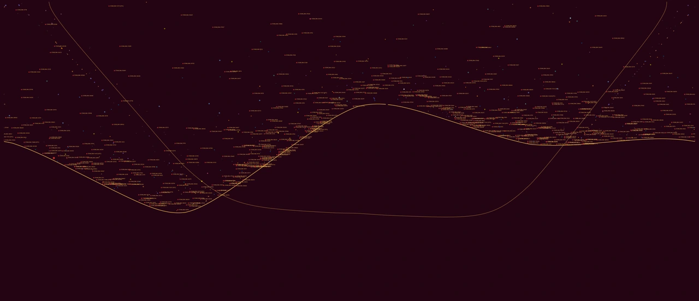
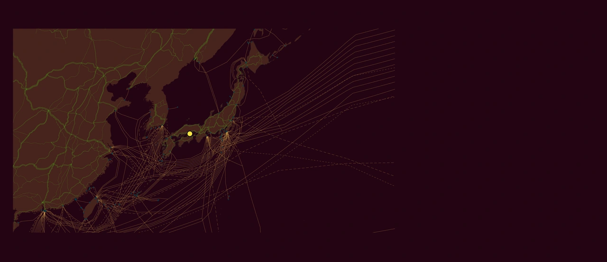
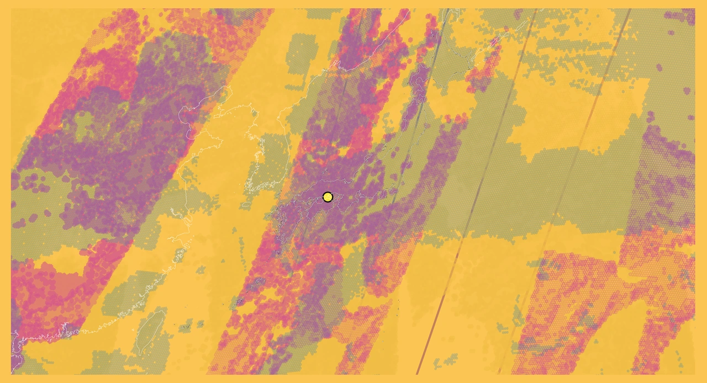

Gallery placement reference. Insert after the three existing lists and before “Two atlases, one shared table.” Live typography comes from your WordPress theme. Return to instructions.
World

Fiber
Submarine and terrestrial cable routes connect continents. Routes are schematic; source snapshots span 2022–2026.
Legend & sources
 Atmosphere
Atmosphere
Cloud, precipitation, aerosol, and radiation observations from 15–29 October 2026, indexed at H3r5.
Legend & sources
 Temperature records · 2026
Temperature records · 2026
Daily land-temperature record counts on H3r5 cells through 28 October 2026. A partial-year count, not a temperature anomaly.
Legend & sources

Starlink and the orbital sky
World atlas observer plate: San Francisco reference, 3 November 2026, 17:10 UTC. Starlink names and distinct vendor symbols.
Legend & sources
Japan / Setouchi
 Water
Water
Japan and its surrounding seas, with the Setouchi reference point.
Legend & sources

Fiber
Japan’s cable landings and terrestrial networks. Amber ocean routes and green land routes; schematic locations.
Legend & sources

Atmosphere
H3r5 atmospheric observations from 15–29 October 2026. Missing daytime cloud retrievals do not mean clear sky.
Legend & sources
 Temperature records · 2026
Temperature records · 2026
The same daily record-count classes on H3r5 cells around Japan, through 28 October 2026.
Legend & sources
 Starlink and the orbital sky
Starlink and the orbital sky
Setouchi observer at 34.45° N, 133.99° E, 29 October 2026, 20:00 UTC. Sky field and Japan locator shown together.
Legend & sources
Cartofreako · Benjamin De Kosnik. Geographic plates use the modified Setouchi AuthaGraph layout. Observer plates retain their own sky geometry and dated reference points. Data credits accompany each legend.
Hamonshū Revisited
Mori Yūzan, Hamonshū (1903). Three water-pattern details, segmented for the Izzi review collection.
The existing page continues here.